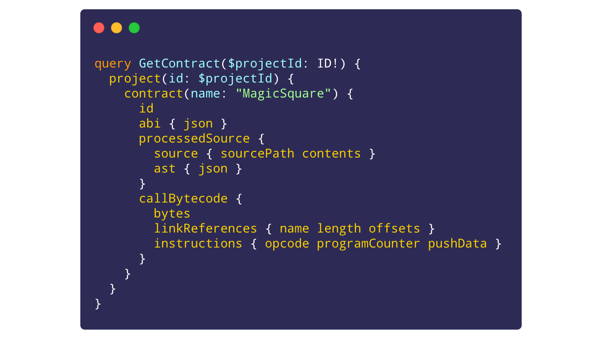

@truffle/db tracks information about smart contracts and their
development histories. It organizes this information almost entirely in the
form of content-addressed, immutable resources and seeks to serve as a
complete system of record, suitable to perfectly reproduce prior builds
and to act as a single source of truth.
This system of record covers the full gamut of concepts related to smart
contract development, from source code to deployment. Among other features,
it includes mechanisms for tracking the continuity of a smart contract as it
is implemented and even as the network to which it's deployed experiences
a hard-fork. Blockchain data is not forgotten — neither should blockchain
metadata.
At a high-level, this package provides a
GraphQL interface and stores data via one of
several persistence backends thanks to PouchDB.
Use of this package directly is intended mostly for other tools – end users
can find interfaces to @truffle/db by way of Truffle itself, e.g. with the
truffle db serve command that starts a GraphQL Playground HTTP server.
This documentation serves to organize the modules and namespaces included
in the package, both for tool developer reference and for continued work
on @truffle/db itself. (Disclaimer: as a result, this API documentation
may serve neither of these purposes well. Please reach out with questions
and/or to suggest helpful clarifications!)
Continue reading below for an overview and full index of this package's
exports.

Figure:
Example query for a project's MagicSquare contract
This package defines the primary [[connect | connect()]] function, which
returns an object adhering to the [[Db]] interface for given
ConnectOptions.
This [[Db]] interface defines the async
[[Meta.Db.execute | db.execute()]]
method that accepts a GraphQL request and returns a GraphQL response.
@truffle/db makes its GraphQL schema available as the exported
[[Graph.schema | Graph.schema]] variable, or view the SDL
details in the [[Graph]] namespace description.
This list is not intended to be static; since @truffle/db is in early
release, it may make sense to add new collections / change relationships
between existing collections. Backwards compatibility is planned but not yet
guaranteed.
This package exposes programmatic interfaces for working with
the resources listed above:
[[Process.resources]], a set of four generator functions that encode
logic for storing and retrieving resources for a given collectionName.
[[Process.Run.forDb()]], to construct an async helper that facilitates
requests/responses from/to the above generator functions against a given
[[Db]] instance.
[[generateId | generateId()]], to predict the ID for a given resource
input. This can be useful for determining how to query for additional
information about entities with known properties.
In addition, please see the [[Resources]] module for handy helper types for
dealing with @truffle/db entities.
Keeping track of blockchain networks is nontrivial if you want to handle
network forks/re-orgs. To accommodate this, @truffle/db models
blockchain networks as individual point-in-time slices at various historic
blocks. As a result, a single blockchain network (e.g., "mainnet") can and
will comprise many disparate [[DataModel.Network]] resources, one for each
block previously added.
This approach preserves immutability but requires additional record-keeping
in order to provide the commonly-understood continuous view of a blockchain.
To maintain this continuity, @truffle/db defines the
[[DataModel.NetworkGenealogy]] resource, each of which links two
[[DataModel.Network]] resources, stating that a given network is ancestor
to another. This collection of genealogy pairs is then used to compute a
sparse list of past historic blocks for a given latest network.
The process to populate @truffle/db with correct network data involves
alternately querying GraphQL and the underlying blockchain JSON-RPC.
This package provides the [[Network]] abstraction to simplify this process.
This package also provides an abstraction to interface with other
Truffle data formats, namely WorkflowCompileResult, returned by
@truffle/workflow-compile, and the Truffle contract artifacts format,
defined by @truffle/contract-schema. This abstraction covers two classes:
[[Project.Project]] for operations that do not require a network
connection. Use function [[Project.initialize | Project.initialize()]]
to create.
[[Project.ConnectedProject]] for operations that do require a
blockchain network. Use existing project abstraction's
[[Project.connect | project.connect()]] method to create.
This package exposes the [[serve | serve()]] function, which returns an
Apollo Server
instance, adherent to the
Node.js http.Server
interface. This server runs
GraphQL Playground for the
browser and also accepts plain GraphQL requests.
(This is a handy way to explore @truffle/db, since it offers schema-aware
auto-completion and the ability to explore relationships between entities.)
This package listing contains other namespaces not mentioned above.
These are for internal use and not to be considered part of @truffle/db's
public interface.
For those curious about these internals, of particular note is the [[Meta]]
namespace, which houses underlying collections-agnostic logic for
integrating GraphQL and PouchDB.
@truffle/db API documentation
Introduction
@truffle/db tracks information about smart contracts and their development histories. It organizes this information almost entirely in the form of content-addressed, immutable resources and seeks to serve as a complete system of record, suitable to perfectly reproduce prior builds and to act as a single source of truth.
This system of record covers the full gamut of concepts related to smart contract development, from source code to deployment. Among other features, it includes mechanisms for tracking the continuity of a smart contract as it is implemented and even as the network to which it's deployed experiences a hard-fork. Blockchain data is not forgotten — neither should blockchain metadata.
At a high-level, this package provides a GraphQL interface and stores data via one of several persistence backends thanks to PouchDB. Use of this package directly is intended mostly for other tools – end users can find interfaces to @truffle/db by way of Truffle itself, e.g. with the
truffle db servecommand that starts a GraphQL Playground HTTP server.This documentation serves to organize the modules and namespaces included in the package, both for tool developer reference and for continued work on @truffle/db itself. (Disclaimer: as a result, this API documentation may serve neither of these purposes well. Please reach out with questions and/or to suggest helpful clarifications!)
Continue reading below for an overview and full index of this package's exports.
MagicSquarecontractContents
For quick reference, this documentation summary contains the following headings:
Introduction
Contents
Core library interface
Data model
Other interfaces
Additional materials
Core library interface
Instantiating @truffle/db
This package defines the primary [[connect |
connect()]] function, which returns an object adhering to the [[Db]] interface for given ConnectOptions. This [[Db]] interface defines theasync[[Meta.Db.execute |db.execute()]] method that accepts a GraphQL request and returns a GraphQL response.GraphQL schema
@truffle/db makes its GraphQL schema available as the exported [[Graph.schema |
Graph.schema]] variable, or view the SDL details in the [[Graph]] namespace description.Data model
Structure
Data is organized as collections of representations of key concepts related to smart contract development. Each collection specifies:
Resources.Resource<"<collectionName>">]]; for retrieved records)Resources.Input<"<collectionName>">]]; for new records)"projectNames"resources are mutable)List of collections
@truffle/db defines the following collections:
"bytecodes"[resource: [[DataModel.Bytecode | Bytecode]]; input: [[DataModel.BytecodeInput | BytecodeInput]]]"compilations"[resource: [[DataModel.Compilation | Compilation]]; input: [[DataModel.CompilationInput | CompilationInput]]]"contracts"[named; resource: [[DataModel.Contract | Contract]]; input: [[DataModel.ContractInput | ContractInput]]]"contractInstances"[resource: [[DataModel.ContractInstance | ContractInstance]]; input: [[DataModel.ContractInstanceInput | ContractInstanceInput]]]"nameRecords"[resource: [[DataModel.NameRecord | NameRecord]]; input: [[DataModel.NameRecordInput | NameRecordInput]]]"networks"[named; resource: [[DataModel.Network | Network]]; input: [[DataModel.NetworkInput | NetworkInput]]]"networkGenealogies"[resource: [[DataModel.NetworkGenealogy | NetworkGenealogy]]; input: [[DataModel.NetworkGenealogyInput | NetworkGenealogyInput]]]"projectNames"[mutable; resource: [[DataModel.ProjectName | ProjectName]]; input: [[DataModel.ProjectNameInput | ProjectNameInput]]]"projects"[resource: [[DataModel.Project | Project]]; input: [[DataModel.ProjectInput | ProjectInput]]]"sources"[resource: [[DataModel.Source | Source]]; input: [[DataModel.SourceInput | SourceInput]]]This list is not intended to be static; since @truffle/db is in early release, it may make sense to add new collections / change relationships between existing collections. Backwards compatibility is planned but not yet guaranteed.
Other interfaces
JavaScript / TypeScript interface
This package exposes programmatic interfaces for working with the resources listed above:
[[Process.resources]], a set of four generator functions that encode logic for storing and retrieving resources for a given
collectionName.[[Process.Run.forDb()]], to construct an
asynchelper that facilitates requests/responses from/to the above generator functions against a given [[Db]] instance.[[generateId | generateId()]], to predict the ID for a given resource input. This can be useful for determining how to query for additional information about entities with known properties.
In addition, please see the [[Resources]] module for handy helper types for dealing with @truffle/db entities.
Network abstraction
Keeping track of blockchain networks is nontrivial if you want to handle network forks/re-orgs. To accommodate this, @truffle/db models blockchain networks as individual point-in-time slices at various historic blocks. As a result, a single blockchain network (e.g., "mainnet") can and will comprise many disparate [[DataModel.Network]] resources, one for each block previously added.
This approach preserves immutability but requires additional record-keeping in order to provide the commonly-understood continuous view of a blockchain. To maintain this continuity, @truffle/db defines the [[DataModel.NetworkGenealogy]] resource, each of which links two [[DataModel.Network]] resources, stating that a given network is ancestor to another. This collection of genealogy pairs is then used to compute a sparse list of past historic blocks for a given latest network.
The process to populate @truffle/db with correct network data involves alternately querying GraphQL and the underlying blockchain JSON-RPC.
This package provides the [[Network]] abstraction to simplify this process.
Example usage
Truffle project abstraction
This package also provides an abstraction to interface with other Truffle data formats, namely
WorkflowCompileResult, returned by @truffle/workflow-compile, and the Truffle contract artifacts format, defined by @truffle/contract-schema. This abstraction covers two classes:Project.initialize()]] to create.project.connect()]] method to create.HTTP interface
This package exposes the [[serve |
serve()]] function, which returns an Apollo Server instance, adherent to the Node.jshttp.Serverinterface. This server runs GraphQL Playground for the browser and also accepts plain GraphQL requests.(This is a handy way to explore @truffle/db, since it offers schema-aware auto-completion and the ability to explore relationships between entities.)
Additional materials
This package listing contains other namespaces not mentioned above. These are for internal use and not to be considered part of @truffle/db's public interface.
For those curious about these internals, of particular note is the [[Meta]] namespace, which houses underlying collections-agnostic logic for integrating GraphQL and PouchDB.